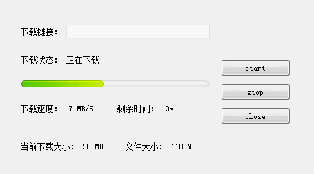

QT之HTTP请求下载
简述
最近在研究了一下用Qt 的方法来实现http下载，Qt 中的Http请求主要用到了QNetworkAccessManager、QNetworkReply、QNetworkRequest 这三块。本篇文章主要叙述如何用Qt 的方法进行HTTP 请求下载文件，能够支持****断点续传****（断点续传即能够手动停止下载，下次可以从已经下载的部分开始继续下载未完成的部分，而没有必要从头开始上传下载），并且实时更新下载信息。整体代码考虑十分周到，对各种情况也做了相应的处理，并且有通俗易懂的注释。好了，代码走起！
代码之路
在讲解代码之前先看一下效果图：
效果：

)从图中可以看出点击start按钮，进行下载，stop按钮暂停当前下载，close按钮停止当前下载，并删除已经下载的临时文件，并将所有参数重置， 这里界面中下载链接输入框为空是因为我在代码中默认了url，也可以在输入框中输入url进行下载。
代码主要包含两个部分：
1、DownLoadManager ： 用来请求下载，向界面传递下载信息，并将下载的内容保存到文件中
2、MyHttpDownload ： 用来接收下载链接，利用DownLoadManager进行下载，更新界面，并对当前下载进行操作（包括：开始、暂停、停止下载）。
1、DOWNLOADMANAGER
#include "downloadmanager.h"
#include <QFile>
#include <QDebug>
#include <QFileInfo>
#include <QDir>
#define DOWNLOAD_FILE_SUFFIX "_tmp"
DownLoadManager::DownLoadManager(QObject *parent)
: QObject(parent)
, m_networkManager(NULL)
, m_url(QUrl(""))
, m_fileName("")
, m_isSupportBreakPoint(false)
, m_bytesReceived(0)
, m_bytesTotal(0)
, m_bytesCurrentReceived(0)
, m_isStop(true)
{
m_networkManager = new QNetworkAccessManager(this);
}
DownLoadManager::~DownLoadManager()
{}
// 设置是否支持断点续传;
void DownLoadManager::setDownInto(bool isSupportBreakPoint)
{
m_isSupportBreakPoint = isSupportBreakPoint;
}
// 获取当前下载链接;
QString DownLoadManager::getDownloadUrl()
{
return m_url.toString();
}
// 开始下载文件，传入下载链接和文件的路径;
void DownLoadManager::downloadFile(QString url , QString fileName)
{
// 防止多次点击开始下载按钮，进行多次下载，只有在停止标志变量为true时才进行下载;
if (m_isStop)
{
m_isStop = false;
m_url = QUrl(url);
// 这里可用从url中获取文件名，但不是对所有的url都有效;
// QString fileName = m_url.fileName();
// 将当前文件名设置为临时文件名，下载完成时修改回来;
m_fileName = fileName + DOWNLOAD_FILE_SUFFIX;
// 如果当前下载的字节数为0那么说明未下载过或者重新下载
// 则需要检测本地是否存在之前下载的临时文件，如果有则删除
if (m_bytesCurrentReceived <= 0)
{
removeFile(m_fileName);
}
QNetworkRequest request;
request.setUrl(m_url);
// 如果支持断点续传，则设置请求头信息
if (m_isSupportBreakPoint)
{
QString strRange = QString("bytes=%1-").arg(m_bytesCurrentReceived);
request.setRawHeader("Range", strRange.toLatin1());
}
// 请求下载;
m_reply = m_networkManager->get(request);
connect(m_reply, SIGNAL(downloadProgress(qint64, qint64)), this, SLOT(onDownloadProgress(qint64, qint64)));
connect(m_reply, SIGNAL(readyRead()), this, SLOT(onReadyRead()));
connect(m_reply, SIGNAL(finished()), this, SLOT(onFinished()));
connect(m_reply, SIGNAL(error(QNetworkReply::NetworkError)), this, SLOT(onError(QNetworkReply::NetworkError)));
}
}
// 下载进度信息;
void DownLoadManager::onDownloadProgress(qint64 bytesReceived, qint64 bytesTotal)
{
if (!m_isStop)
{
m_bytesReceived = bytesReceived;
m_bytesTotal = bytesTotal;
// 更新下载进度;(加上 m_bytesCurrentReceived 是为了断点续传时之前下载的字节)
emit signalDownloadProcess(m_bytesReceived + m_bytesCurrentReceived, m_bytesTotal + m_bytesCurrentReceived);
}
}
// 获取下载内容，保存到文件中;
void DownLoadManager::onReadyRead()
{
if (!m_isStop)
{
QFile file(m_fileName);
if (file.open(QIODevice::WriteOnly | QIODevice::Append))
{
file.write(m_reply->readAll());
}
file.close();
}
}
// 下载完成;
void DownLoadManager::onFinished()
{
m_isStop = true;
// http请求状态码;
QVariant statusCode = m_reply->attribute(QNetworkRequest::HttpStatusCodeAttribute);
if (m_reply->error() == QNetworkReply::NoError)
{
// 重命名临时文件;
QFileInfo fileInfo(m_fileName);
if (fileInfo.exists())
{
int index = m_fileName.lastIndexOf(DOWNLOAD_FILE_SUFFIX);
QString realName = m_fileName.left(index);
QFile::rename(m_fileName, realName);
}
}
else
{
// 有错误输出错误;
QString strError = m_reply->errorString();
qDebug() << "__________" + strError;
}
emit signalReplyFinished(statusCode.toInt());
}
// 下载过程中出现错误，关闭下载，并上报错误，这里未上报错误类型，可自己定义进行上报;
void DownLoadManager::onError(QNetworkReply::NetworkError code)
{
QString strError = m_reply->errorString();
qDebug() << "__________" + strError;
closeDownload();
emit signalDownloadError();
}
// 停止下载工作;
void DownLoadManager::stopWork()
{
m_isStop = true;
if (m_reply != NULL)
{
disconnect(m_reply, SIGNAL(downloadProgress(qint64, qint64)), this, SLOT(onDownloadProgress(qint64, qint64)));
disconnect(m_reply, SIGNAL(readyRead()), this, SLOT(onReadyRead()));
disconnect(m_reply, SIGNAL(finished()), this, SLOT(onFinished()));
disconnect(m_reply, SIGNAL(error(QNetworkReply::NetworkError)), this, SLOT(onError(QNetworkReply::NetworkError)));
m_reply->abort();
m_reply->deleteLater();
m_reply = NULL;
}
}
// 暂停下载按钮被按下,暂停当前下载;
void DownLoadManager::stopDownload()
{
// 这里m_isStop变量为了保护多次点击暂停下载按钮，导致m_bytesCurrentReceived 被不停累加;
if (!m_isStop)
{
//记录当前已经下载字节数
m_bytesCurrentReceived += m_bytesReceived;
stopWork();
}
}
// 重置参数;
void DownLoadManager::reset()
{
m_bytesCurrentReceived = 0;
m_bytesReceived = 0;
m_bytesTotal = 0;
}
// 删除文件;
void DownLoadManager::removeFile(QString fileName)
{
// 删除已下载的临时文件;
QFileInfo fileInfo(fileName);
if (fileInfo.exists())
{
QFile::remove(fileName);
}
}
// 停止下载按钮被按下，关闭下载，重置参数，并删除下载的临时文件;
void DownLoadManager::closeDownload()
{
stopWork();
reset();
removeFile(m_fileName);
}2、MYHTTPDOWNLOAD
#include "myhttpdownload.h"
#include "downloadmanager.h"
#include <QDebug>
#define UNIT_KB 1024 //KB
#define UNIT_MB 1024*1024 //MB
#define UNIT_GB 1024*1024*1024 //GB
#define TIME_INTERVAL 300 //0.3s
MyHttpDownload::MyHttpDownload(QWidget *parent)
: QWidget(parent)
, m_downloadManager(NULL)
, m_url("")
, m_timeInterval(0)
, m_currentDownload(0)
, m_intervalDownload(0)
{
ui.setupUi(this);
initWindow();
}
MyHttpDownload::~MyHttpDownload()
{
}
void MyHttpDownload::initWindow()
{
ui.progressBar->setValue(0);
connect(ui.pButtonStart, SIGNAL(clicked()), this, SLOT(onStartDownload()));
connect(ui.pButtonStop, SIGNAL(clicked()), this, SLOT(onStopDownload()));
connect(ui.pButtonClose, SIGNAL(clicked()), this, SLOT(onCloseDownload()));
// 进度条设置样式;
ui.progressBar->setStyleSheet("\
QProgressBar\
{\
border-width: 0 10 0 10;\
border-left: 1px, gray;\
border-right: 1px, gray;\
border-image:url(:/Resources/progressbar_back.png);\
}\
QProgressBar::chunk\
{\
border-width: 0 10 0 10;\
border-image:url(:/Resources/progressbar.png);\
}");
}
// 开始下载;
void MyHttpDownload::onStartDownload()
{
// 从界面获取下载链接;
m_url = ui.downloadUrl->text();
if (m_downloadManager == NULL)
{
m_downloadManager = new DownLoadManager(this);
connect(m_downloadManager , SIGNAL(signalDownloadProcess(qint64, qint64)), this, SLOT(onDownloadProcess(qint64, qint64)));
connect(m_downloadManager, SIGNAL(signalReplyFinished(int)), this, SLOT(onReplyFinished(int)));
}
// 这里先获取到m_downloadManager中的url与当前的m_url 对比，如果url变了需要重置参数,防止文件下载不全;
QString url = m_downloadManager->getDownloadUrl();
if (url != m_url)
{
m_downloadManager->reset();
}
m_downloadManager->setDownInto(true);
m_downloadManager->downloadFile(m_url, "F:/MyHttpDownload/MyDownloadFile.zip");
m_timeRecord.start();
m_timeInterval = 0;
ui.labelStatus->setText(QStringLiteral("正在下载"));
}
// 暂停下载;
void MyHttpDownload::onStopDownload()
{
ui.labelStatus->setText(QStringLiteral("停止下载"));
if (m_downloadManager != NULL)
{
m_downloadManager->stopDownload();
}
ui.labelSpeed->setText("0 KB/S");
ui.labelRemainTime->setText("0s");
}
// 关闭下载;
void MyHttpDownload::onCloseDownload()
{
m_downloadManager->closeDownload();
ui.progressBar->setValue(0);
ui.labelSpeed->setText("0 KB/S");
ui.labelRemainTime->setText("0s");
ui.labelStatus->setText(QStringLiteral("关闭下载"));
ui.labelCurrentDownload->setText("0 B");
ui.labelFileSize->setText("0 B");
}
// 更新下载进度;
void MyHttpDownload::onDownloadProcess(qint64 bytesReceived, qint64 bytesTotal)
{
// 输出当前下载进度;
// 用到除法需要注意除0错误;
qDebug() << QString("%1").arg(bytesReceived * 100 / bytesTotal + 1);
// 更新进度条;
ui.progressBar->setMaximum(bytesTotal);
ui.progressBar->setValue(bytesReceived);
// m_intervalDownload 为下次计算速度之前的下载字节数;
m_intervalDownload += bytesReceived - m_currentDownload;
m_currentDownload = bytesReceived;
uint timeNow = m_timeRecord.elapsed();
// 超过0.3s更新计算一次速度;
if (timeNow - m_timeInterval > TIME_INTERVAL)
{
qint64 ispeed = m_intervalDownload * 1000 / (timeNow - m_timeInterval);
QString strSpeed = transformUnit(ispeed, true);
ui.labelSpeed->setText(strSpeed);
// 剩余时间;
qint64 timeRemain = (bytesTotal - bytesReceived) / ispeed;
ui.labelRemainTime->setText(transformTime(timeRemain));
ui.labelCurrentDownload->setText(transformUnit(m_currentDownload));
ui.labelFileSize->setText(transformUnit(bytesTotal));
m_intervalDownload = 0;
m_timeInterval = timeNow;
}
}
// 下载完成;
void MyHttpDownload::onReplyFinished(int statusCode)
{
// 根据状态码判断当前下载是否出错;
if (statusCode >= 200 && statusCode < 400)
{
qDebug() << "Download Failed";
}
else
{
qDebug() << "Download Success";
}
}
// 转换单位;
QString MyHttpDownload::transformUnit(qint64 bytes , bool isSpeed)
{
QString strUnit = " B";
if (bytes <= 0)
{
bytes = 0;
}
else if (bytes < UNIT_KB)
{
}
else if (bytes < UNIT_MB)
{
bytes /= UNIT_KB;
strUnit = " KB";
}
else if (bytes < UNIT_GB)
{
bytes /= UNIT_MB;
strUnit = " MB";
}
else if (bytes > UNIT_GB)
{
bytes /= UNIT_GB;
strUnit = " GB";
}
if (isSpeed)
{
strUnit += "/S";
}
return QString("%1%2").arg(bytes).arg(strUnit);
}
// 转换时间;
QString MyHttpDownload::transformTime(qint64 seconds)
{
QString strValue;
QString strSpacing(" ");
if (seconds <= 0)
{
strValue = QString("%1s").arg(0);
}
else if (seconds < 60)
{
strValue = QString("%1s").arg(seconds);
}
else if (seconds < 60 * 60)
{
int nMinute = seconds / 60;
int nSecond = seconds - nMinute * 60;
strValue = QString("%1m").arg(nMinute);
if (nSecond > 0)
strValue += strSpacing + QString("%1s").arg(nSecond);
}
else if (seconds < 60 * 60 * 24)
{
int nHour = seconds / (60 * 60);
int nMinute = (seconds - nHour * 60 * 60) / 60;
int nSecond = seconds - nHour * 60 * 60 - nMinute * 60;
strValue = QString("%1h").arg(nHour);
if (nMinute > 0)
strValue += strSpacing + QString("%1m").arg(nMinute);
if (nSecond > 0)
strValue += strSpacing + QString("%1s").arg(nSecond);
}
else
{
int nDay = seconds / (60 * 60 * 24);
int nHour = (seconds - nDay * 60 * 60 * 24) / (60 * 60);
int nMinute = (seconds - nDay * 60 * 60 * 24 - nHour * 60 * 60) / 60;
int nSecond = seconds - nDay * 60 * 60 * 24 - nHour * 60 * 60 - nMinute * 60;
strValue = QString("%1d").arg(nDay);
if (nHour > 0)
strValue += strSpacing + QString("%1h").arg(nHour);
if (nMinute > 0)
strValue += strSpacing + QString("%1m").arg(nMinute);
if (nSecond > 0)
strValue += strSpacing + QString("%1s").arg(nSecond);
}
return strValue;
}标注： 代码注释中提到可以根据URL来获取文件名，下方给予解释说明。
QString QUrl::fileName(ComponentFormattingOptions options = FullyDecoded) const Returns the name of the file, excluding the directory path. Note that, if this QUrl object is given a path ending in a slash, the name of the file is considered empty. If the path doesn’t contain any slash, it is fully returned as the fileName.
在Qt助手中我们找到此方法，根据加粗的字段可以看出fileName()方法也可能返回为空，所以不是都有效。